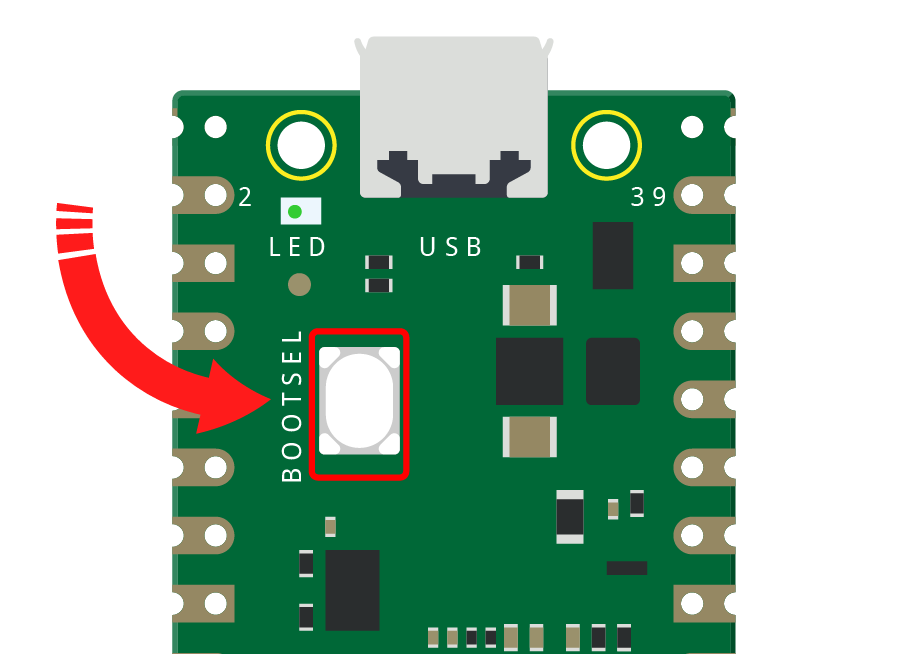
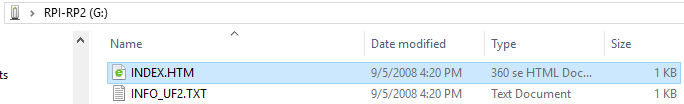
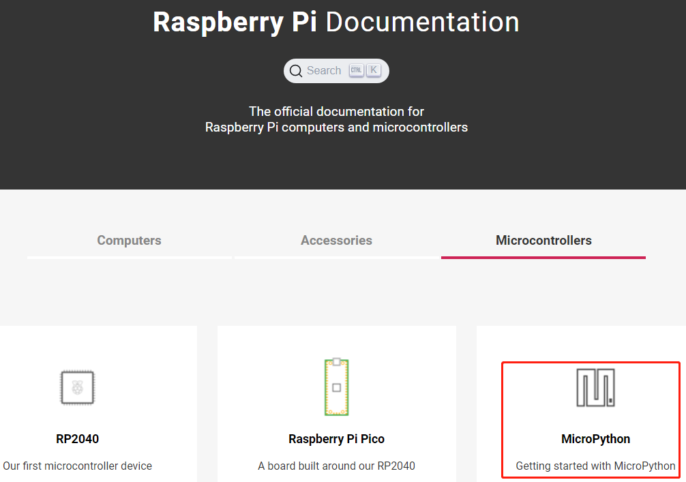
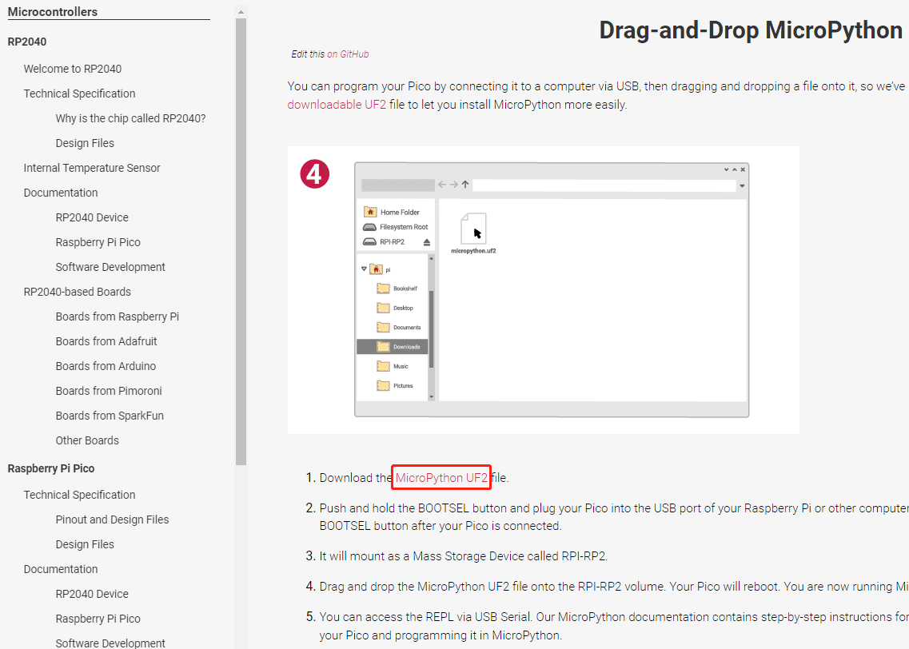

Set up Your Pico¶
Press and hold the BOOTSEL button and then connect the Pico to computer via a Micro USB cable.
Release the BOOTSEL button after your Pico is mount as a Mass Storage Device called RPI-RP2.

Open the drive, you’ll see two files on your Pico: INDEX.HTM and INFO_UF2.TXT. Double click the first file, INDEX.HTM, to open it in your browser.
INDEX.HTM : This is a welcome page telling you all about your Pico.
INFO_UF2.TXT : Contains the version of the bootloader it’s currently running.

When the browser opens, click MicroPython.

On this page, scroll down to Drag-and-Drop MicroPython, then download the MicroPython firmware by clicking the Micropython UF2 link.

Open the Downloads folder and find the file you just downloaded - it will be called ‘rp2_pico_xxxx.uf2’, then drag it to RPI-RP2 storage drive. Your Pico will reboot and disappear from the File Manager.

Note
Please ignore the warning that a drive was removed without being ejected, that’s supposed to happen!
When you dragged the MicroPython firmware file onto your Pico, you told it to flash the firmware onto its internal storage. To do that, your pico switches out of the special mode you put it in with the ‘BOOTSEL’ button, flashes the new firmware, and then load it (meaning that your Pico is now running MicroPython).
Congratulations: your’re now ready to get started with MicroPython on your Raspberry Pi Pico!